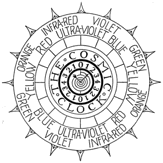

PRELUDE to INTIMATE HOME STUDY COURSE of UNIVERSAL LAW, NATURAL SCIENCE AND PHILOSOPHY¶
These lessons are for the purpose of revealing the nature of God and verifying His Presence as the One Universal Being, through the gradual unfolding of the secret processes of Creation which have until now been unknown to man.
My ability to prove God as a scientific fact and bring Him within the range of man’s comprehension through incontrovertible evidence of His controlling Presence in all creating things is the result of having experienced fully that rarest of all mental phenomena known as The ILLUMINATION into the Light of Cosmic Consciousness, during a thirty-nine day and night period in May and June of 1921.
I will not describe that phenomenon here, for it will be fully described in the following pages, except to explain that the seat of sensation becomes completely severed from its centering conscious Mind for intervals, followed by intervals of partial awareness of bodily sensing. During these intervals of complete severance one becomes wholly Mind, the One Mind of God, in which is all-knowledge, all-power and all-presence. During all history since the dawn of Consciousness in man, there have been recorded about thirty cases of partial illumination but probably only three in all history have been fully illumined.
Naturally the entirety of the secrets of Creation were mine to know as a complete and consistent cosmogony which enabled me to vision the universe as a whole. Underlying all of it was a fundamental principle which is so simple that I felt that I could gather the great scientists of the world together and give them that entire principle in a few minutes, for I had been aware that science has been searching for such an underlying principle which would apply to all phenomena for decades.
This I prepared to do by purchasing a text book of science (Duncan’s New Knowledge) to familiarize myself with the present state of scientific knowledge, for before my illumination I knew nothing whatsoever of science. To my amazement I found that the entire cosmogenetic theory of science was so unlike God and Nature that, while reading it, I felt that these laws, hypotheses and other conclusions could not possibly have been written by men of our day for they were so far afield from fact they seemed more like the conjurings of Arthurian sages who told of the flat earth upheld at its four corners by huge elephants as their cosmogenetic concept.
As I read these unnatural theories and laws it gradually dawned upon me that these primal ideas were so fixed within the mental structure of science that it would be more than foolhardy to attempt to carry out my plan. The science I read was so utterly complex that it was beyond the average comprehension whereas the science of God’s plan in Nature which I wished to give was so simple that anyone of average intelligence could master it without difficulty.
I also realized that I was as unaware of the language in which to speak to science as I was of the Chinese tongue, and its terminology must be mastered also before I could approach the subject. This seemed strange to me for I felt that no special terminology was even needed to tell that simple story of the CAUSE of all EFFECT.
Knowing that I would but invite ridicule if I attempted to impart my knowledge prematurely, I began an intensive preparation to so effectually present God’s simple principle, which is forever repeated in every phenomena of motion, that there could be no possible legs left for the old and inconsistent cosmogony to stand on. To do this it became necessary to so build the new one that the old one need not be attacked to tear it down, but merely paint the picture of what is right over the old picture of what is wrong so effectually that the old one can never again be seen.
During this long period I have made some progress by gradually infiltrating some new ideas about the elements of matter during my seven years of the Presidency of The Society of Arts and Sciences, such as my work on hydrogen which led to the discovery of its isotopes and heavy water and by charting the two atomic bomb elements which I then copyrighted under the names of Uridium and Urium. Twenty years later they were isolated and renamed Plutonium and Neptunium without giving due credit to me for having first given knowledge of their existence to the world by mailing my new periodic charts containing these two elements to one thousand foremost scientists.
This, and many other discoveries were given by me to the world without credit, but that did not matter. Truth eventually forces recognition and I could afford to be wise and wait until I had worthily prepared for the day when the Light could so fully be focused upon the truth that its recognition could not be evaded.
The fundamental cosmogony of science which so amazed me was what might be termed a transient, discontinuous, unbalanced one-way universe which had a beginning aeons ago by the unexplained and unexplainable formation of a tremendous flaming mass of heat which is slowly radiating away by splitting into smaller masses which expand within themselves, and from each other, until they eventually end in heat death.
Out of this unnatural theory came the first and second laws of thermodynamics which have no validity whatsoever, for the premise that heat is energy, upon which they are founded, has no validity. The resultant one-way universe allowed for no compensating generation to counterbalance its radiation, despite the accepted law of equal and opposite action and reaction. “Energy cannot run up hill”, science says, “it can only run down hill”, It so happens in God’s plan that energy neither runs up, nor down hill.
God’s universal body is a two-way compensating, continuous and eternal universe of absolute balance in every effect of motion. Generation equals radiation, compression equals expansion, the red half of the spectrum equals the blue half, solid matter balances the potential of its surrounding space in every wave field, and each one of every opposite pair not only balances with its opposite but borns its opposite through sequential interchange.
God’s universe is entirely composed of microcosmic and macrocosmic masses of pulsing electric waves which we call matter. These pulsing waves constitute the universal heartbeat, or universal breath of God’s body. God’s body continues its manifestation of the life principle by breathing outward and inward sequentially, just as you breathe out and in in balanced sequences to continue your appearance of existence.
Every mass in the universe breathes out and in, rhythmically. There are no exceptions to this law which every nebula, sun, planet or electron of an atom obeys, but in varying frequencies appropriate to their potential. Your breath frequency may be ten [cycles] per minute while the sun’s frequency is one cycle in eleven years.
The most obvious fact of Nature is its repetition [in reverse] of every effect of motion in two-way pulsing cycles. It is unaccountably strange that science has never observed this most obvious of all of Nature’s characteristics. Every cycle in Nature is a two-way, equal interchange between pairs of opposite conditions. That interchange between the equally balanced anodes and cathodes of this electric wave universe constitute its pulsing heartbeat, which likewise is cyclic, otherwise it could not continue.
This electric wave universe of divided pressures is an electric record of God’s thinking. It is the Creation of an ever living and eternal Creator. If Creation is condemned to death, then, by the same token, so is the Creator.
God’s universe of electric wave matter has no beginning or ending in time, for time itself is voided by itself. It has no existence except to the limited senses of man who sees but its forward flow and not its compensating, voiding backward flow.
Time is but a part of this great illusion of Nature, this cosmic Light mirage which forever simulates the idea of God’s knowing, through two-way balanced self-voiding motion which but produces an unreal universe of seeming. If time has no other than a sensed existence it can have no beginning or ending.
The purpose of these lessons is twofold. First, and paramount, is to prepare the layman who desires personal power and progress through achievement in personal creative expression to attain that end by full understanding of the CAUSE of all the EFFECTS he produces in order that he may command those effects to his obedience.
With cosmic knowledge as a foundation upon which he can firmly stand to face every problem of his daily life, whether social, domestic, business, health, family, friendships, professional or otherwise he can meet them with a clarity of vision and conquer them with intelligent action and decision instead of complexing his problems because of his inability to fully comprehend their cause.
The secondary purpose is to so thoroughly define and explain this universal illusion which seems so real to the senses of man, and prove to the satisfaction of the most exacting scientist that the entire electric wave universe is but a cosmic cinema picturing a cosmic idea of cause and effect with cosmic projection cameras called wave fields of light. These imaginary cosmic projection cameras of light wave fields are as describable and definable mechanically as the projection machines of their earthly counterparts are describable and definable.
The cosmic cinema is a glorious manifestation of the imaginary thought processes of God’s Mind, but the projected light images of God’s imagining which seem to move and have life of being in them are but electrically sensed thought forms of thought imaginings which but constitute a mirage of that REALITY which it but simulates. This fact will be gradually clarified as these chapters unfold, also God’s reason for limiting the senses of man in order that he should believe the simulation to be reality.
This solution of the seemingly unfathomable mystery of Creator and Creation fulfills a prophesy made by Sir Oliver Lodge who said, in effect, that if in the coming centuries the great cosmic secret was ever revealed to man its discovery would not come from the trained scientific Mind but would be the supreme vision of some poet, painter, philosopher or saint who could see the universe as a whole.
It is my hope that each reader will so clearly comprehend each part of this whole picture of God’s cosmic plan that each one can so put them together in his comprehension that he too may vision the many parts as One Whole. He who can so strongly see the Oneness of all the seeming many parts of God’s plan may make of his own life a divine extension of that One and thus become master Creator of his own creating universe.
Walter Russell, Sc. D.
A Home Study Course
UNIVERSAL LAW, NATURAL SCIENCE AND PHILOSOPHY
LESSONS 1 to 48
by Walter and Lao Russell
Copyrighted 1950-52 by
by Walter Russell
No part of this manuscript can be printed in any form without permission from the author, except by a reviewer who may quote brief passages in a review to be printed in a magazine or newspaper.
ISSUED BY
THE WALTER RUSSELL FOUNDATION SWANNANOA, WAYNESBORO, VIRGINIA

Archival Plate (image001.gif)¶